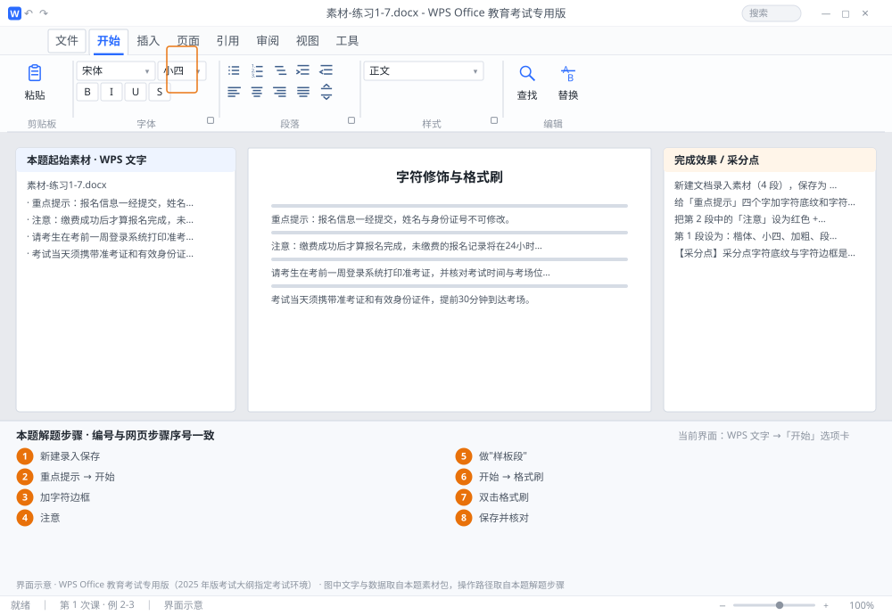

完成比对文档 · 例 2-3
字符修饰与格式刷 ｜ 第 1 次课 / WPS 文字 ｜ 网页：入门实操课.html ｜ 考试环境：WPS Office 教育考试专用版（2025 年版考试大纲指定考试环境）
用途 本页按修订后的题目要求与解题步骤生成，是交卷自查的结果基准：
逐项列出每一步应出现的可复核结果，配合模拟操作截图与解题结果文件使用。
它不是素材包的一部分，不会预置答案动作；起始素材仍从本题素材包下载。
一、本题起始素材包
目录：练习素材/练习1-7-字符格式与格式刷/ ｜
下载包：练习素材/下载/练习1-7-字符格式与格式刷.zip
二、题目要求
- 新建文档录入素材（4 段），保存为 学号-姓名-练习2-3.docx。
- 给「重点提示」四个字加字符底纹和字符边框。
- 把第 2 段中的「注意」设为红色 + 加粗。
- 第 1 段设为：楷体、小四、加粗、段前段后各 0.5 行；再用格式刷双击把该段格式复制到第 3、4 段。
三、解题步骤（编号与下方核对表、截图编号一致）
- 新建录入保存。Ctrl+N → 录入 4 段（每段 Enter）→ F12 另存为 学号-姓名-练习2-3.docx。
- 加字符底纹。选中「重点提示」四字 →「开始」→ 字体组里的 A 带底色图标（字符底纹）→ 点下拉箭头可选颜色。
- 加字符边框。保持选中 → 点旁边的方框 A 图标（字符边框）。此时四个字外有一圈细框。
- 设红色加粗。选中第 2 段的「注意」→ 字体颜色 → 标准色 红；按 Ctrl+B 加粗。
- 做"样板段"。光标点在第 1 段内 → 设 楷体、小四、加粗；段落对话框设段前 0.5 行、段后 0.5 行。
- 单击格式刷。保持光标在第 1 段 → 点「开始」→「格式刷」→ 光标变成小刷子 → 在第 3 段内拖选一次 → 格式套用后刷子自动消失（只刷一次）。
- 双击格式刷。再回到第 1 段点格式刷，这次双击图标 → 依次刷第 4 段 → 按 Esc 或再点一次格式刷退出，可连续刷多段。
- 保存并核对。Ctrl+S；逐段检查字体是否统一为楷体、段前段后是否一致。
四、完成效果 / 采分点
采分点字符底纹与字符边框是"字符级"格式（不是段落底纹） · 「注意」红色加粗 · 第 3、4 段与第 1 段格式完全一致
五、逐项完成核对表
| 步骤 | 关键操作路径 | 应出现的结果（可复核） |
|---|
| 1 | 新建录入保存 | F12、学号-姓名-练习2-3.docx |
| 2 | 加字符底纹 | 「重点提示」、「开始」 |
| 3 | 加字符边框 | 加字符边框 |
| 4 | 设红色加粗 | 「注意」 |
| 5 | 做"样板段" | 0.5 行 |
| 6 | 单击格式刷 | 「开始」、「格式刷」 |
| 7 | 双击格式刷 | 双击格式刷 |
| 8 | 保存并核对 | 保存并核对 |
六、模拟操作截图

界面示意 · WPS Office 教育考试专用版 · 橙色编号与本题解题步骤序号一致；
图中文字与数据取自本题素材包，功能入口取自本题解题步骤。
核对方法：按网页解题步骤完成并另存自己的成稿后，逐行比对本表第 3 列的
参数、公式、区域、文件名与对象数量；再对照网页「完成效果 / 采分点」检查版式是否一致。